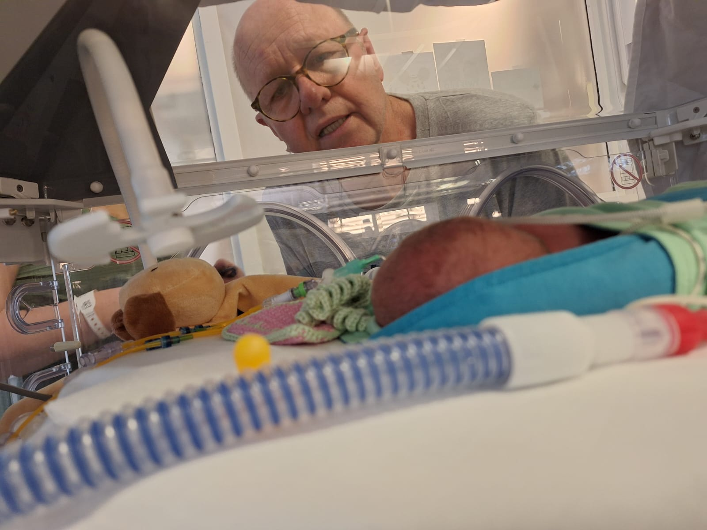
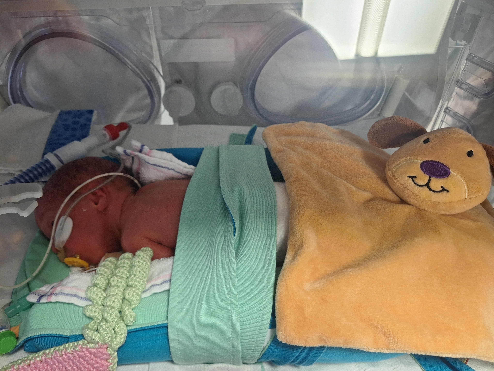

Her er noen første bilder av barnebarna mine

24. april: De er allerede her! Flott! 2. mai: Besøkt for første gang. Barnebarna har det veldig bra, bare se på ansiktet mitt, de er 3 små mirakler.
Heldigvis takler Juul og Danny situasjonen veldig bra. Det var en fantastisk dag, tilbake igjen 3. mai! Snakket med dem på norsk (Ha det bra, vi snakkes snart igjen!).

Sem, du er den første, og vil alltid være det. Vet du hvem den andre mannen på månen var? Det er det jeg mener. Og vi husker alle fortsatt den første.

Du er damen i dette selskapet. Jeg gir deg kallenavnet "Buzz" Mirthe, fordi han var den andre personen på månen.

Lest best: Lasse, noen må holde seg litt bak for å beholde oversikten.